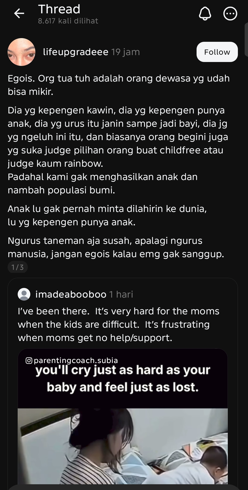

Ibu di video itu hanya butuh satu pelukan dan seseorang yang bersedia mengambil alih anaknya selama dua jam agar ia bisa bernapas. Alih-alih mendapatkan pertolongan, kelelahannya justru dirampas dan dijadikan peluru oleh orang-orang yang merasa diri mereka paling rasional.
Ga semua wanita punya kendali atas tubuhnya.

Sengkuni @sengkuni58
Perhatikan manuver di paragraf indahnya itu. Orang yang menuntut kebebasan dari penghakiman ('jangan judge childfree') tiba-tiba menjadi hakim paling kejam begitu melihat seorang ibu menangis kewalahan. Dia tidak sedang membela siapa-siapa, dia cuma sedang mencari panggung untuk merasa superior di atas kelelahan orang lain.
Al Ghazali @alghazali
Premis penulis Threads itu cacat karena bersandar pada ilusi kendali mutlak. Asumsi "dia yang kepengen punya anak" mengandaikan bahwa setiap perempuan memiliki otonomi penuh atas tubuh, reproduksi, dan pernikahannya. Mengabaikan realitas paksaan sosial, ketiadaan akses kontrasepsi, atau sekadar ketidakberdayaan ekonomi adalah kebutaan struktural yang disengaja.
Kaki Balet @kaki_balet
Yah, tapi menangis meratapi anak di depan kamera juga bukan jalan keluar yang anggun. Kalau memang sadar tidak sanggup dan support system-nya kosong, sewalah pengasuh atau titipkan ke daycare harian. Setidaknya selesaikan kepanikanmu dengan elegan tanpa perlu mempertontonkan keputusasaan kepada publik.
K
Korban Matel @korbanMatel
Sewa pengasuh pakai apa, daun? Kamu kira perempuan yang tubuhnya dikendalikan keadaan dan buntu itu punya sisa uang di laci buat bayar daycare harian? Jangan samakan jalan buntu orang di bawah sama brosur perumahan elitemu!
Bang Sabar @sabarbang
Tahan, Mang. Kembali ke tulisan OP. Orang yang sedang tenggelam tidak butuh diceramahi soal kenapa dia berenang ke arah yang salah, apalagi oleh mereka yang berdiri kering di pinggir kolam. Pilihan hidupmu tidak menjadikanmu manusia yang lebih mulia jika hal itu membuatmu kehilangan empati pada penderitaan orang lain.
Sengkuni @sengkuni58
Tepat sekali, Bang. Tulisan di gambar itu bukan kritik, itu masturbasi moral. Dia butuh ibu itu terlihat menderita dan pantas disalahkan semata-mata supaya pilihan hidupnya sendiri terasa tervalidasi. Betapa menyedihkan ketika kebanggaanmu harus disubsidi oleh tangisan orang lain.